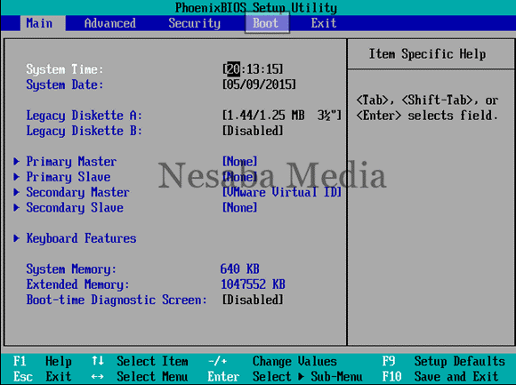
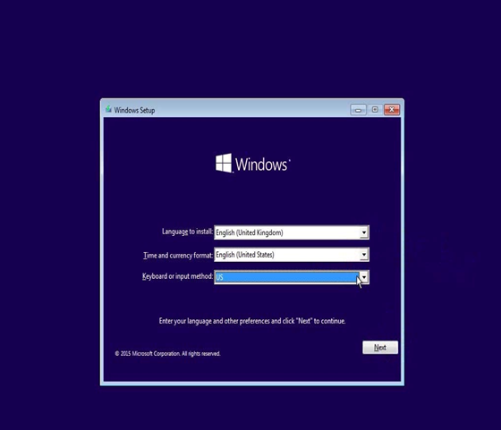
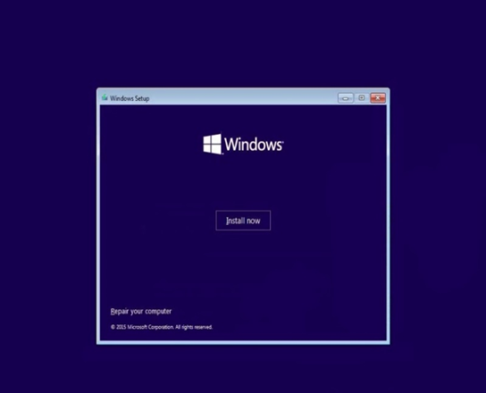
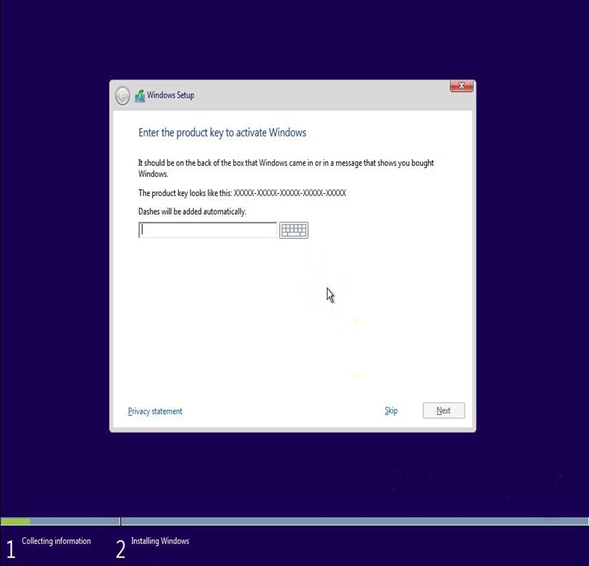
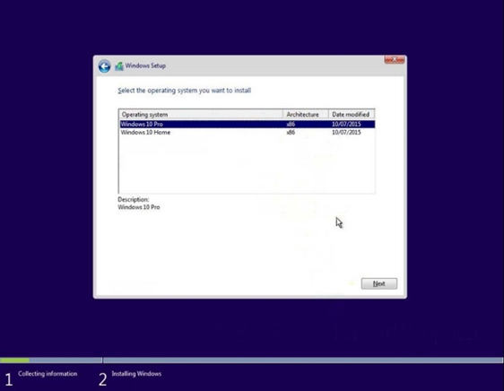
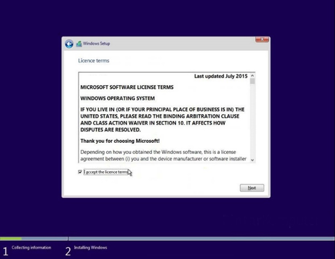
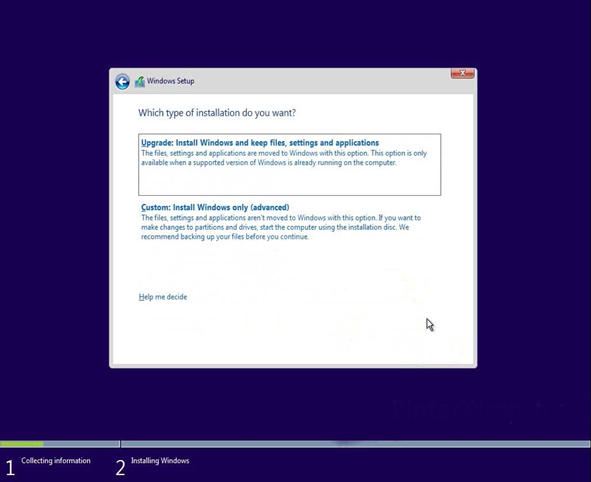
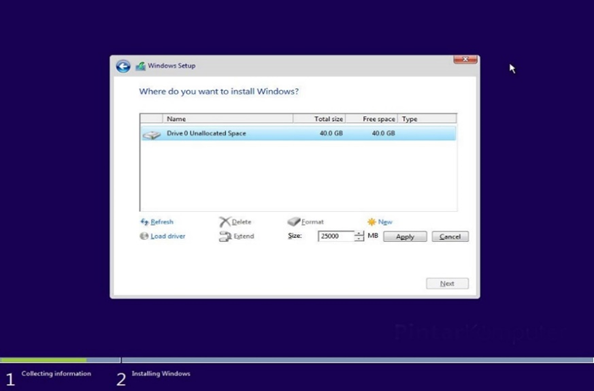
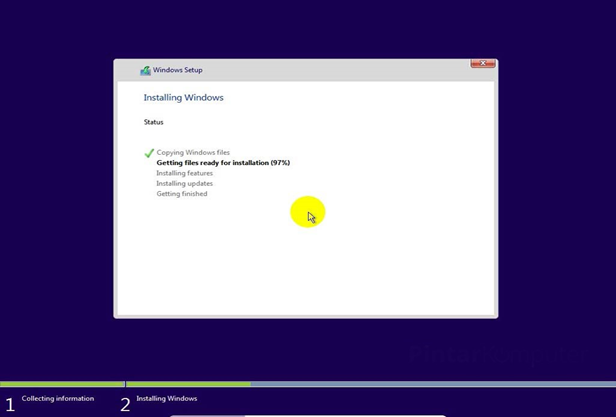
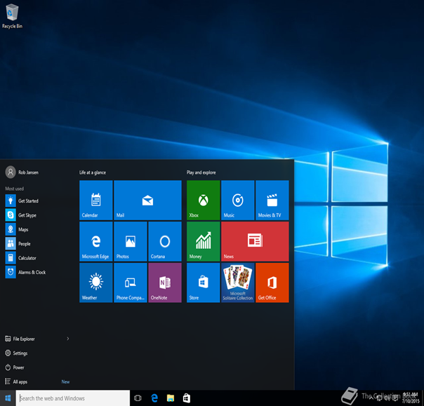

Dipersembahkan untuk orang - orang yang ingin install Windows 10 tanpa ribet
Windows 10 merupakan system oprasi computer pribadi yang dikembangkan oleh Microsoft sebagai bagian dari keluarga sistem operasi Windows NT. Diperkenalkan pada tanggal 30 September 2004 dirilis pada 29 Juli 2015 dan pada November 2015, Threshold 2 dari Windows 10 (v10.0.10586) dirilis kepada publik.
Pertama masukan media installer windows 10 yang kamu gunakan (flashdisk atau DVD). Setelah itu nyalakan komputer, lalu masuk dulu ke BIOS untuk mengatur First Booting. Caranya ketika komputer baru menyala, tekan tombol F2 atau beberapa komputer ada yang menggunakan tombol DEL untuk masuk ke BIOS. Sesuaikan saja. Setelah disetting first boot nya, tekan F10, save and restart. Komputer akan booting melalui media installer windows 10, dan jika muncul perintah Press any key too boot from CD or DVD, tekan saja sembarang tombol. Nanti proses akan segera dilanjutkan.
Pilih Language to install, Time and currency format, dan Keyboard or input method. Jika sudah klik next.
Lalu klik Install now. Lalu, tunggu setup proses hingga selesai.
Selanjutnya masukan serial number yang kalian miliki. Jika kalian tidak mempunyainya, klik skip saja.
Pilih arsitektur Windows sesuai dengan license atau kebutuhan kalian.
Kemudian beri centang pada opsi I accept the license terms. Lalu klik Next.
Pada bagian ini terdapat dua pilihan, yaitu upgrade dan custom. Karena kita akan menginstall ulang komputer/laptop kita.
Lalu kita akan berlanjut pada bagian pembagian partisi. Penting! Disini saya harap kamu berhati-hati betul, khususnya untuk yang masih pertama kali. Karena jika salah, bisa-bisa data kamu bakalan hilang. Misalkan anda ingin melakukan install ulang maupun upgrade/ downgrade dari sistem operasi windows lama anda ke windows 10, cukup delete Drive 0 Partition 2 (partisi C:) dan Drive 0 Partition 1 : System Reserved, nanti secara otomatis, kedua partisi yang anda hapus tersebut menjadi Unallocated Space (belum dipartisi). Nah, selanjutnya silakan buat partisi baru lagi dan jadikan Drive 0 Partition 2 sebagai lokasi instalasinya, lalu pilih Next untuk melanjutkan. Dengan begitu, data-data pada partisi lain tetap aman (tidak terhapus). Bagi anda yang ingin install ulang maupun upgrade/ downgrade dari sistem operasi windows lama anda ke windows 10, silakan lewati langkah nomor 7-11. Dan bagi anda yang HDDnya masih kosong, mulus atau yang belum pernah diinstall sistem operasi windows sebelumnya. Jika sudah kamu atur partisinya, pilih partisi yang akan kamu jadikan lokasi untuk sistem windows nya. Kemudian klik Next.
Selanjutnya adalah serangkaian proses pengalokasian file-file windows dari media installer ke hardisk. Tunggu sampai prosesnya selesai.
Jika komputer sudah restart, kamu bisa keluarkan media installer dari komputer. Lalu tunggu semua prosesnya sampai benar-benar selesai. Dalam proses ini, komputer mungkin akan beberapa kali restart. Biarkan saja, komputer sedang menyesuaikan sistem dengan hardware yang ada. Setelah itu ikuti langkah pembuatan user windows dan penginstalan selesai
Dengan mengikuti langkah-langkah dalam tutorial ini, Anda sekarang seharusnya dapat menginstal Windows 10 di PC atau laptop Anda tanpa kesulitan. Proses instalasi yang sukses akan membuka akses ke berbagai fitur dan pembaruan terbaru yang ditawarkan oleh Windows 10. Pastikan untuk selalu melakukan backup data penting sebelum melakukan instalasi sistem operasi agar data Anda tetap aman.
Jika Anda menghadapi masalah atau memiliki pertanyaan lebih lanjut, jangan ragu untuk mencari bantuan di forum komunitas atau menghubungi dukungan teknis Microsoft. Selamat mencoba dan semoga berhasil!
Kami adalah tim pendidik dan developer yang bersemangat dan berkomitmen untuk menyediakan sumber daya pendidikan online yang berkualitas.
| Name | Contact |
|---|---|
| Cep Fadil Rozak | john@example.com |
| Muhamad Lambda Gibran Ramadhan | lambda@idst.mail |
| Ramli Rustiawandi | ramlirustiawan1707@gmail.com |